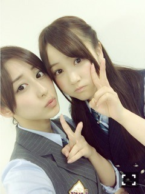
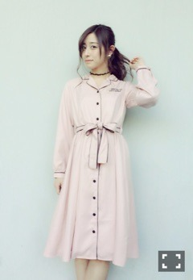
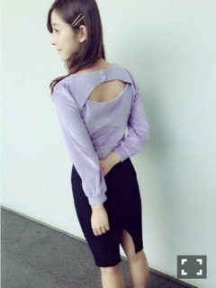

| 2016/04 30 Sat | 斎藤ちはる 握手会編(´>∀<｀)ゝ |
ちはるーむへようこそ\( ˆoˆ )/
なかなか更新できなくて、ごめんなさい。
書きたいことがたくさんありすぎるので
ジャンルに分けて更新するね！
まず握手会！♡

4/16の幕張メッセでの全国握手会は、
みなみとペアでしたー( ◦˙ ˙◦ )
年齢は１つしか変わらないけど、
みなみは可愛い妹って感じがして、大好き！
あ、ちー！♡って寄ってきてくれるの(﹡ˆ ˆ﹡)
握手会もたくさんの方に来ていただいて
素敵な日になりました！\( ˆoˆ )/
みなみファンの方、そしてちはるーむめいとの皆さん、ありがとうございました(﹡ˆ ˆ﹡)
4/17は、個別握手会！
4部
MULLERのトップスに、スキニーパンツ！
5部
COMME CA DU MODE のシースルーシャツに、スキニーパンツ！
どちらもトップスが白で、ボトムスが黒の
モノトーンコーデになりました\( ˆoˆ )/
4部が肩出しだったから、真夏だ真夏だって言われたよー。。
真夏め(｡-_-｡)
ぶにゅ。悪い顔♡
この日の個別は沢山の方が来てくれました(｡･o･｡)ﾉ
私のために券を取って来てくれてるって考えると、
本当に有難いな。大切だな。って改めて感じるの。
私、また来てね！ってよく言うんだけど、テンプレとかじゃなくて
本当にまた来て欲しいから、また会いに来て欲しいから言うんだ。
来てくれてありがとう！
もっと幸せを与えられるような存在になるね(﹡ˆ ˆ﹡)
昨日4/29の握手会は、万理華とペア♡
万理華とペア初めてだったんだけど、レーンで2人でのんびり握手してました\( ˆoˆ )/
握手の合間にたくさんお話したよ！！
万理華の飾らないところが大好き。
万理華ファンの皆さん、ちはるーむめいとの皆さん、ありがとうございました♡
そしてこの日のミニライブでは
19人、初めて揃っての「不等号」のパフォーマンスでした！
全員揃うってやっぱり嬉しいよね。
不等号、かっこいいって言われることが多くて嬉しいです( ´ ▽ ` )ﾉ
4/30の個別握手会！
4部

Honey Cinnamonのパジャマ風ワンピース♡
プロデューサーの平松可奈子さんが元SKEということで、名古屋意識！！
結構前に買っていたんだけど着る機会がなかったからやっと着れた♪
いま、パジャマのようなスタイルが流行っていて、
こんな格好で外歩くことが普通なんだよ！
(私はまだ勇気でない...)
5部

tops : EAT ME
skirt : ZARA
5部は、少し大人っぽく、乃木カラーの紫で♡
背中が開いてるのと、タイトスカートの後ろがスリットが入っていてちょっとセクシー(｡-_-｡)
EAT MEのお洋服、可愛い上にセクシーで大好きなんだ♡
そうそう、いつもしてる首のチョーカーは、
Bubblesのバラのチョーカーだよ！
チョーカーにハマってるの\( ˆoˆ )/
個別来てくれた皆さんありがとう！
いつも力もらってるよ。
私も皆さんの力になりたいな。
名古屋の個別は、力不足と感じました。
私にできることをしなければ。頑張る。
握手会編、完。
斎藤ちはる